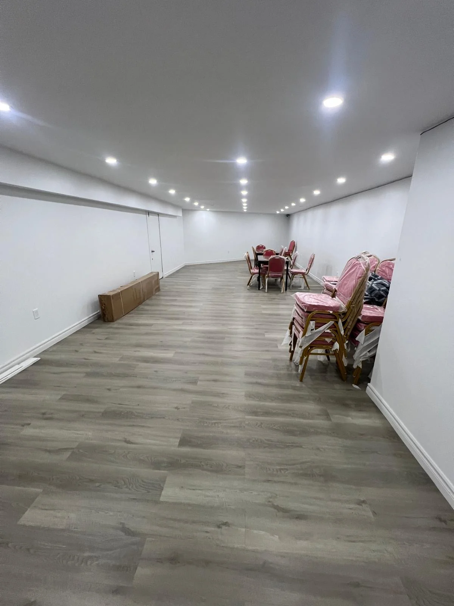
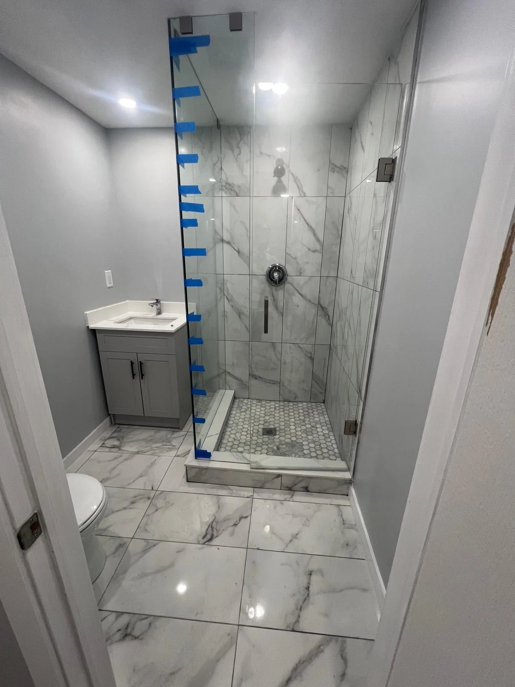

Basement Drywall Finishing
Unfinished basements turned into livable square footage.
Learn More about Basement Drywall Finishing →Service Area · Pickering & Ajax, ON
Basement finishing, drywall, taping and painting across Pickering and Ajax. A straight run east on the 401 from our Scarborough shop, which is why callbacks here are easy.
Pickering and Ajax sit about twenty minutes east of our shop on Scarborough Golf Club Rd, and that proximity is the reason we cover them properly rather than just listing them. It means a real quote visit instead of a number over the phone, and it means coming back for a touch-up is a short trip rather than something we quietly hope you do not ask for.
The housing splits cleanly in two, and the two halves need different work. Bay Ridges, Amberlea and the older parts of Ajax are largely 1970s and 1980s: stipple ceilings, smaller and more broken-up rooms, and basements that were never intended to be lived in. Duffin Heights, Audley and the newer subdivisions are the opposite, with higher ceilings, longer walls, and the finish standard that comes with them.
Basement finishing is the single most common project we take on across both halves, and it is where the difference between them shows up most clearly.
Local Housing
Which half of Pickering or Ajax you are in changes what the job actually is, and it is worth knowing which conversation you are about to have.
Either way the quote is free and we come out to look at the space rather than pricing it blind.
Recent Work
Photos are from jobs across our service area. We have not labelled them by city, because we would rather show you the work than claim a postcode.

Basement Flooring

Basement Bathroom

Ceiling and Pot Lights
Keep Exploring
Unfinished basements turned into livable square footage.
Learn More about Basement Drywall Finishing →Laminate and vinyl plank over a properly prepped subfloor.
Learn More about Flooring →Tested, scraped, skim-coated and repainted.
Learn More about Popcorn Ceiling Removal →Common Questions
We work there regularly. It is about twenty minutes from the shop along the 401, close enough that we will drive out for the quote and drive back for a touch-up. That is the practical test of whether a service area is real rather than decorative.
Usually within a few days, and often sooner. Call (647) 531-8731 and we will give you a real date rather than a vague one.
Vinyl plank, in almost every case. It is synthetic the whole way through, so basement humidity does not trouble it. Laminate has a wood-based core that swells if it gets damp, and a basement is exactly where that risk lives.
Have it tested first. Texture from before the mid-1980s can contain asbestos, and a lot of the older Pickering and Ajax housing falls inside that window. A test is cheap. Scraping an untested ceiling is not.
The whole thing. Framing, insulation, drywall, taping, tiling, flooring and paint all come from the same crew, which is the main reason a basement finishes faster with us than with four separate trades trying to schedule around each other.